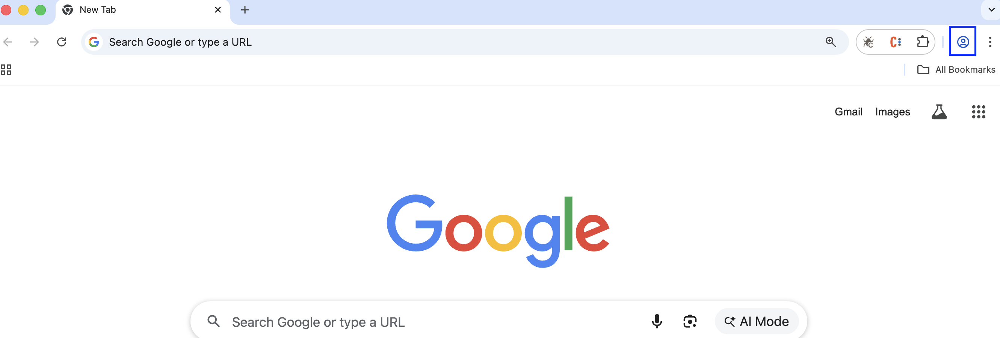
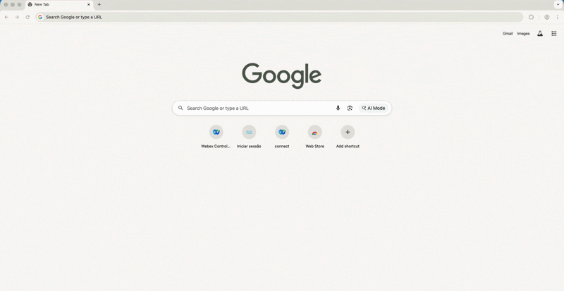
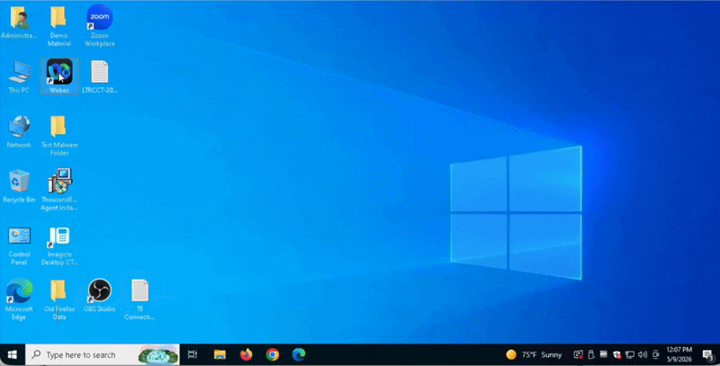

Getting Started
Modular by Design
Each lab in this session is fully independent. You can complete them in any order based on your interests and available time.
1 Disclaimer
Although the lab design and configuration examples provided throughout this session can be used as a reference, for design-related questions please consult the official documentation at help.webex.com.
2 Lab Preparation
2.1 Chrome Profile Setup
To avoid browser login and cache errors, you will work with dedicated Chrome Profiles representing the different user roles throughout the labs.
Profiles to Create
| Profile Name | Role |
|---|---|
Admin_Lab |
Administrator |
Supervisor_Lab |
Supervisor |
Agent_Lab |
Agent |
Steps
- Launch Chrome and locate the person icon near the top-right corner of the browser.
Chrome Profile icon
{kind=link}

- Click the icon and select Add Chrome Profile, then choose Stay Signed out.
- Select a color, enter the profile name (e.g.
Admin_Lab) and click Done. - Repeat steps 2 and 3 to create the two remaining profiles —
Supervisor_LabandAgent_Lab.
See How It Works
{kind=link}

3 Lab Access
The Pod Discipline — Read Before You Start
Throughout all labs, you will be working on a shared tenant with all other students in this session.
To keep the environment stable for everyone, please follow these rules:
- Always replace XXX with your assigned 3-digit Pod ID (e.g., 001, 002)
- Your naming convention must always start with the prefix Pod followed by your ID — (PodXXX)
- Always use the exact name indicated in the lab guide — do not use different names, do not alter the suggested name, do not add extra characters
- Do not modify, delete, or overwrite any resource labeled ADMIN or DO NOT DELETE — those are shared configurations that support the entire lab
- If you do not follow this convention exactly, you will overwrite your neighbor's work
Stay disciplined. Your Pod ID is your workspace.
3.1 Lab Credentials
All credentials for this session have been pre-provisioned by the lab proctors.
Your pod has been pre-assigned to a desktop. Please use one of the following options to retrieve your credentials:
Option 1 – Lab Assistant (Primary)
If not already open, navigate to the following link in your browser:
https://lab-assistant.com/
Option 2 – Credentials File (Backup)
Open the file LTRCCT-2001_Credentials_PODXXX.txt located on the Desktop of your lab machine.
| Role | Username | Password |
|---|---|---|
| Administrator | wxcclabs+admin_IDXXX@gmail.com |
Provided in the LTRCCT-2001_Credentials file |
| Agent | wxcclabs+agent_IDXXX@gmail.com |
Provided in the LTRCCT-2001_Credentials file |
| Supervisor | wxcclabs+supvr_XXX@gmail.com |
Provided in the LTRCCT-2001_Credentials file |
Your credentials file also includes
- 🪪 Your Pod ID
- 📞 Your PSTN Channel Number
- 🔑 Your Airtable Authorization Token
Action Required — Webex Space
Before starting labs, post a message in the Webex space assigned for this lab
with your Pod ID + Full Name (e.g., Pod 001 — Jane Doe).
This allows proctors to track assignments and assist you faster throughout the session.
Lost your Airtable Token?
If you need your Airtable Authorization Token again at any point during the lab, request it directly from a proctor in the Webex lab space.
3.2 Making Test Calls - Webex App Setup
If you can make US PSTN Calls from your mobile skip this section
If you are unable to place test calls from your mobile device, you can use the Webex App pre-installed on your lab machine as your PSTN calling device.
- On your lab machine Desktop, locate the Webex App icon and double-click to open it.
- Sign in using your Supervisor credentials from
LTRCCT-2001_Credentials. - Once logged in, navigate to the Calling menu on the left panel.
- Dial your assigned Channel PSTN Number to place a test call into the lab flow.
See How It Works
{kind=link}

Earbuds Available at Your Seat
A pair of wired earbuds has been provided at your workstation, use them if needed to place calls through the Webex App or to handle interactions as an Agent during Lab 3. 🎧 Keep them — they're yours to take home!
3.3 Lab Quick Links
Bookmark these URLs — you will use them throughout all labs.
| Tool | URL |
|---|---|
| Collaboration Control Hub | admin.webex.com |
| Agent / Supervisor Desktop | desktop.wxcc-us1.cisco.com |
4 Lab Environment — Pre-Configured Components
To maximize your lab time, the following components have been pre-configured by the proctors. You do not need to set these up.
| Component | Details |
|---|---|
| Site | One site pre-created for the lab environment |
| Cisco PSTN | Applied to the lab environment |
| Teams & Queues | Pre-created for each Pod |
| Desktop Profile & Layout | Pre-configured for the lab environment |
| Webex Connect Services | Pre-provisioned for each Pod |
| Webex Connect Web Chat Asset | Pre-provisioned for each Pod |
| Users & Licenses | Agent and Supervisor users with Contact Center licenses applied for each Pod |
| Multimedia Profile | Pre-configured for the lab environment |
| Wrap-up & Idle Codes | Pre-configured for the lab environment |
| AI Assistant Features | Generated summaries, sentiment analysis, and real-time transcription enabled for the lab environment |
Lab-Specific Assets
Depending on the lab, additional assets such as flows, knowledge bases, AI Agents, and other configurations have been pre-created for each specific use case. These items are explained in detail in the corresponding lab section.
Lab authored for Cisco Live 2026